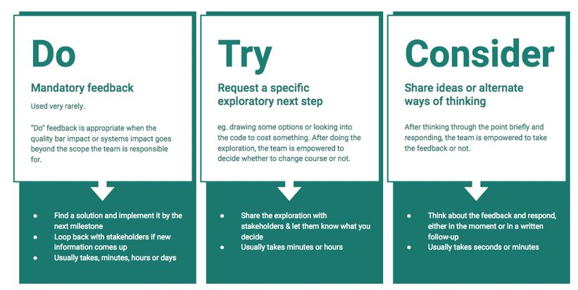

Chapter 28
"What got you here won't get you there." It's a common refrain we heard from product executives about the move into management. 1
Priyanka was a well-loved, results-oriented, hard-working PM who cared about all of the people on her team and worked hand-in-hand with them to solve any problem that came up. She seemed like an obvious choice for management, but soon ran into issues.
As a PM, she was willing to do whatever it took to ship a successful product. She looked into every detail, joined every user session, and triaged every bug. As a manager, she tried to stay as closely involved, but got complaints about micromanaging. The better PMs tried to switch to other teams where they'd have more autonomy.
Things weren't any better with the PMs who were struggling. As a PM, she was careful to never blame her teammates when things went wrong. As a manager, she didn't hold people accountable; after all, weren't they all in this together? Unfortunately, at review time, they were quite surprised to hear they were missing expectations.
There were more problems when she worked with other company leaders. People loved the way she advocated for her team when she was a PM. At the leadership strategy session, however, she was called myopic for protesting an important pivot that would cancel one of her team's projects.
In many ways, success as a PM manager is the same as success for an IC PM—shipping great products by leading a team of people. As a PM manager, you're just working through one more layer of people. The leadership skills from (see Part F: Leadership Skills) are as important as ever.
In a few ways though, as Priyanka learned, people management requires new, different leadership skills. Your official role changes your relationship with coworkers. Your scope expands to more teams, more strategy and a longer time horizon. To succeed in your new role, you'll need to develop your reports to take over your old responsibilities so that you can continue to expand even more.
See yourself as a member of the leadership team ⚡
As a people manager, it can be tempting to direct your attention downward and focus on being the best possible manager for your reports. You'll remember all of your own past managers and what you liked and didn't like and want to make your reports love you. You'll want to shelter them from unpleasant directives, defend them in conflicts, and never change plans on them when they're in the middle of a project.
That might sound nice in theory, but there's much more to management than getting stellar reviews from your reports. As a manager, you need to work with other leaders to create great outcomes across the entire company. You are more accountable to the teams above you than the teams below you.
Sometimes you will need to change plans on people and waste their work. Sometimes you'll ask one of your teams to set aside their own goals to help another team. You might need to defend a company policy to your reports, even if you personally disagree with it.
To succeed, you'll need to invest in your relationship with other leaders at the company. If you've found yourself in conflict with one of them in the past, now is the time to be the bigger person and step up to resolve it, for the good of both of your teams.
You speak on behalf of the company
When you are a manager, you're in a position of authority and your words carry more weight than they did before.
Imagine you're attending a meeting of your company's employee group for women. People are discussing that the new member of the executive team is a man. "I'm not surprised," you say, "This company only promotes men." As an IC, that comment would just be a complaint about the company's past behavior. As a manager, however, people in the room might construe it as an admission of discrimination. One of your reports, who was in the room, might sue the company stating that her boss told her only men could be promoted.
This isn't saying you should condone bad behavior, but you shouldn't speak carelessly around ICs, especially those who report to you. Even friendly teasing that was fine between peers can become scary when it comes from the person who determines your paycheck.
As a manager, you need to foster accountability in your team. This means ensuring your reports follow through on their commitments, and if they miss their commitments, they explain why and take steps to do better next time. This doesn't mean that people need to be punished for missing a launch date; rather, that mistakes are taken seriously and learned from so that things can run more smoothly the next time.
The Five Whys process (see Five Whys in Chapter 6) is a great way to foster accountability on your team. When OKRs are missed or other problems pop up, you can ask the PM to run a Five Whys and report back to you with what they learned, and what steps they're taking to avoid the problem in the future. The formalized steps help keep the conversation away from unproductive blame and towards future learning.
More generally, you can ask people to explain their actions and thought processes. Set up processes to ensure people do retrospectives for launches. Follow up with people when you notice something surprising. Ask people whether they are on track to hit each of their goals. If they are off track, ask what their plan is for getting back on schedule.
As a manager, you'll rely on other people to execute your strategy. You need to find a way to divide the components of your strategy so multiple PMs can work on it at the same time. Here are some tips for approaching strategy as a manager:
For more on strategy, read Part E: Strategic Skills .
Keep your teams connected to the strategy ⚡⚡
Creating a strategy isn't enough. You need to ensure that strategy is understood and followed. Small misunderstandings can cause big problems: wasted work, missed priorities, misaligned product decisions, and decreased morale.
You'll need to repeat the strategy more often than you'd think. Take every opportunity to connect things back to the strategy. State what part of the strategy you're using when you make decisions. Remind teams how their project connects to the strategy. Talk about the strategic impact when you celebrate wins.
OKRs (see OKRs in Chapter 18) are a powerful tool to connect strategy to execution. Review each team's OKRs and don't settle until you're happy with them. You'll want to ensure that they are ambitious enough to make good progress towards the company's larger goals that you're responsible for.
Early in your career, you brought your work to someone else for approval. Now, you're on the other side. You're the one who's responsible for ensuring the quality of your team's products.
You'll need to empower your team and ensure quality. The PMs who report to you are experts in their area and are much closer to the research, customers, and problems than you are. On the other hand, you probably have more experience, judgment, and bigger-picture context.
As a manager you'll review more work than you did as an IC—not just designs and working products, but also early specs and strategies as well. The best practices you learned while giving feedback to designers and engineers still apply:
Be aware that as a manager, your words carry more weight. People may feel less comfortable pushing back on your ideas or may accidentally interpret a casual comment as a direct order. The Do, Try, Consider Framework (see The "Do, Try, Consider" framework for product feedback in Chapter 28) can help clarify intentions.
Delegating is always an important skill, but as an IC, there are limits to how much you can delegate without getting into the territory of not doing your job. As a manager, the more you can delegate effectively, the more you can focus on higher-level responsibilities.
The advice in "Learn how to delegate well" in Chapter 13 applies here, but now you have even more flexibility.
Make sure to consider these options:
Many leaders hold on to responsibilities for too long because they don't feel like they can trust anyone else to do a good enough job. By hoarding responsibilities, they become a bottleneck and slow down dozens, or even hundreds of people. Start by delegating the types of work where a mistake would be tolerable or reversible.
Management can be isolating; your reports see you as "the boss" and your manager expects you to be independent. You might be surprised that you're no longer invited to hang out on the weekend, and that people are more cautious when speaking with you. You can't talk as openly about the challenges you're facing since they're often private.
Management is also emotionally taxing. Your reports might cry in 1:1s. They might be mad at you when they don't get allocated to the projects they want or don't get the raises they thought they deserved. You'll hear about the difficult situations people are facing in their personal lives. You'll feel responsible for the people on your team, and it might sometimes keep you up at night.
By intentionally seeking out mentors and peers to connect with, you won't be alone when you need help or empathy. Look for people with whom you can speak openly—for example, other managers at your company or a professional coach. You might also want to find people who are facing the same types of challenges as you, some who are a little ahead of you, and some who are much more experienced.
You don't have to put on a big show about being the boss when you become a manager.
You'll be able to build up trust and have the most impact with the people who report to you if they feel like you're authentic and they can connect with you. One way to do this is to be open about your own failings and struggles.
Some managers get so caught up in the idea of being a good and supportive boss that they fail to set important, healthy boundaries. They'll listen to an employee complaining about a new policy for hours or blame themselves when that employee ignores their feedback. They might make excuses for rudeness or disrespect.
This kind of permissiveness tends to backfire. First, it takes away your time and energy that could be better spent elsewhere. Second, it encourages bad behavior in your direct reports that will eventually limit their career growth.
If you find yourself upset with one of your reports, that's a sign that you need to set boundaries.
You can limit the time you spend discussing a topic and end meetings that cross your boundaries. You can give your reports feedback that they're not taking responsibility for their own problems, pushing back on policies too much, being disrespectful, or that they're not taking feedback well.
It can feel uncomfortable, at first, to stand up for yourself in this way. It may help to imagine you were setting the boundaries for someone else on your team, not just yourself. You can also write and share a list of cultural expectations so that you have something official to help you feel justified in enforcing the boundaries.
Just because you're accountable for the work doesn't mean you should start micromanaging. Great PMs do not want to be micromanaged, so if you want to build a strong team, you need to give people autonomy.
As a manager, it helps to reflect on where you can tolerate mistakes or solutions that are different from what you would have done. If the answer is "nowhere," then you'll be forced to micromanage.
Instead, consider letting your team learn things for themselves:
If you get stuck, remember that it's okay to tell them what the solution needs to achieve, just not how to do it.
Be intentional about velocity ⚡
As a manager, many of your decisions can affect the velocity of people on your teams.
You can increase velocity by hiring talented people, training them well, setting up product principles, creating a design system, and validating ideas early.
If you send a team back to iterate more before moving forward, that decreases velocity. That can be okay—after all, it doesn't matter how fast you go if you're heading in the wrong direction.
However, you need to be mindful of the delays you cause when you ask for more iteration. Only ask for this when you think the improvement will be worth the delay.
Ensure that your reports feel full ownership over their work ⚡⚡
You want to ensure that the people on your team feel full ownership and responsibility over their work, even if you're the one who is ultimately accountable. You won't be able to scale your influence without it.
Adam Thomas, a principal at Approaching One and product leader, puts it this way:
You have no way of being more knowledgeable than the PMs on your team, so any traditional advice about the work itself is generally useless. Your job is to help them make better/faster decisions and step out of the way.
One way to put this into action is with the way you frame your questions. Presume that they are aware and on top of things. Instead of asking "You should find out how our competitors handle this," ask, "How do our competitors handle this?"
Ask questions to validate their assumptions. For example, you might ask, "How many people used that feature?" if you think it's important for the decision, or "Did that analysis slice by active and inactive accounts?" if you think they might have mistakenly not excluded inactive accounts.
As much as possible, treat your reports like the owners of the problem and yourself as an advisor. Even when you do know more than they do, don't let them rely on your knowledge rather than building up their own.
Look out for decisions with broad or long-term impact ⚡⚡
You need to step in when the fallout from a decision goes beyond the scope the team is responsible for. In these cases, you might need to ask for extra validation. In extreme cases, you might need to veto a decision.
Here are a few situations where the decision might go beyond the scope of the team:
Again, empowering your teams and delegating to them is valuable. But, there's also a time and place to step in.
Intentionally create transparency ⚡⚡
The world of management can be very secretive. You work privately with your reports on their areas for growth. You attend confidential executive meetings. You learn about new initiatives and priorities. Much of your time is spent on work you can't talk about openly.
This secrecy has a few downsides. Your reports might assume you don't do much, and that can erode their respect for you. Additionally, when the secrecy involves useful context for decision-making, the team might make uninformed decisions or be confused by the requests they're getting. It's useful to counteract this secrecy by intentionally creating transparency:
Transparency can't always be offered, but when it can, it builds trust, respect, and a sense of fairness.
The "Do, Try, Consider" framework for product feedback
Asana's "Do, Try, Consider" framework is a great way to empower your team while ensuring consistent and high-quality results. It gives approvers a clear way to share mandatory and non-mandatory feedback without being misunderstood. 2

With this framework, when you give feedback, you clearly state if it is a "do," "try," or "consider." Each type of feedback has clear expectations around the intention of the feedback and how the team should respond.
To use this framework with your team, first introduce the concepts, and then be sure to tell them when you're using it. It might take a few examples before people really understand the type of response you're expecting. Soon the vocabulary will become second nature.
Shreyas Doshi, a product leader who has previously worked at Stripe, Google, Twitter, and other companies, explains that one of the most important changes that a person must make when becoming a manager is shifting from creating work to editing work.
The first part of being a good editor is recognizing that your job has shifted from creator to editor. As a product leader, you need to create a strong team of PMs who can self-manage, and to do that you need to give them room to exercise their judgment. That will be the only way you can scale your impact.
Switching to an editor mindset can be especially hard for managers who feel like they need to prove they deserve the job. They might feel like criticizing the decisions of people on their team validates their own skills. Instead, you want to approach the situation with curiosity, such as, "Tell me what problem you're trying to solve with this."
The next part is to apply editing to all granularities, from product strategy down to pixels. To do this, you'll need to set expectations with your team that you intend to edit their work. You intend to offer suitable opinions on the work and evaluate the success of the work. Many PMs don't know what their manager's job really is; you'll need to explain what success looks like for you so they'll understand why you are editing their work. Be clear on which things you want to edit thoroughly versus which are optional to edit thoroughly. Beyond creating clarity, this signals which projects are the most important and where the PM should be spending the most time.
Finally, when it comes time for the actual editing, follow these steps:
By following these steps, you give your team the space and direction they need to deliver great work.
1 . Including in this excellent post: https://www.reforge.com/blog/crossing-the-canyon-product-manager-to-product-leader
2 . I also write about this at https://medium.com/@jackiebo/do-try-consider-how-we-give-product-feedback-at-asana-db9bc754cc4a